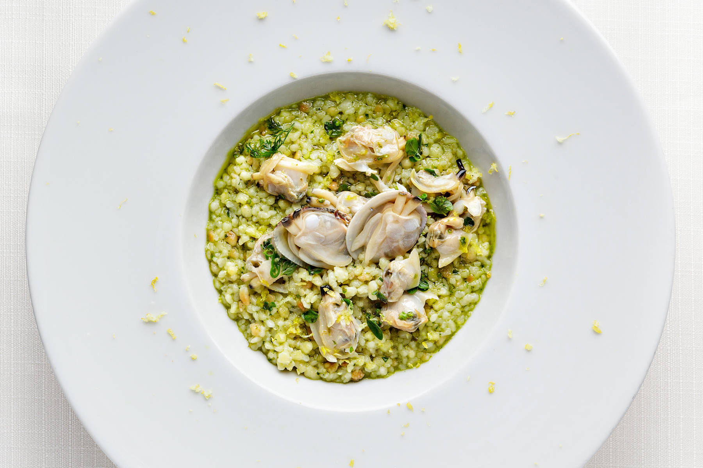

Back

Recipe by Chef Luigi Pomata, of the Luigi Pomata Restaurant in Cagliari.
Risotto is a northern Italian rice dish cooked with broth until it reaches a creamy consistency. The broth can be derived from meat, fish, or vegetables. Many types of risotto contain butter, onion, white wine, and parmesan cheese. It is one of the most common ways of cooking rice in Italy.
Ingredients
320 g Sardinian fregola
300 g Nieddittas clams
1 lt vegetable stock
½ bunch marjoram
3 sprigs thyme
3 sprigs sage
1 sprig basil
½ bunch parsley
4 sprigs oregano
50 g pine nuts
70 gr grated pecorino DOP
Zest of 1 lemon
Extra virgin olive oil
Salt and pepper
Steps
Wash the Nieddittas clams. Put the clams in a pan with olive oil and cook with the lid on for 8/9 minutes on a medium heat. Turn off the heat and leave to cool. Strain the cooking liquid and discards the shells.
Strip herbs and wash in cold water, then dry. Put a glass of olive oil in a blender with a pinch of salt, grated cheese and pine nuts. Blend all ingredients until creamy. Add moist herbs and continue blending until the pesto is smooth and creamy.
Put raw olive oil in a pan with the fregola. Toast it for a few minutes, continue to cook for 8 minutes, basting with plenty of broth, add the clam cooking liquid at the end, with the herb pesto and cook for a further 3 minutes.
Turn off the heat, place in a serving dish.
Finish off by adding Nieddittas clams and lemon zest.